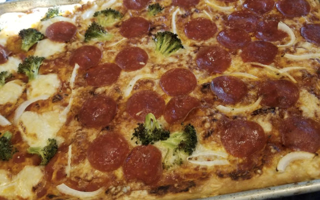

Martin's Pizza

Crust
- 3 cups (360g) King Arthur Unbleached Bread Flour (high protein % AP also works)
- 1 1/2 teaspoons (8g) table salt
- 1 teaspoon (3g) instant yeast
- 1 cup plus 3 tablespoons (270g) water, lukewarm (95°F)
- generous 2 tablespoons (27g) olive oil, divided*
*If splitting the dough between 2 cast iron skillets, use an additional 1 tablespoon (12g) olive oil for the second pan.
Toppings
- 1/3 to 1/2 cup (74g to 113g) pizza sauce, homemade or store-bought*
- 6 ounces (170g) mozzarella cheese, grated (about 1 1/4 cups, loosely packed)
- 2 ounces (60g) pepperoni, for topping; optional*
- freshly grated hard cheese (Parmesan, Asiago, Romano) and fresh herbs (oregano, basil, thyme), for sprinkling on top after baking; optional
Steps
- To make the dough: Weigh your flour; or measure it by gently spooning it into a cup, then sweeping off any excess.
- In a large bowl, whisk together the flour, salt, and yeast until well combined. Add the water and 1 generous tablespoon (15g) of the olive oil. Mix until thoroughly combined and homogenous; don’t be afraid to stir vigorously to incorporate the dry ingredients. If the dough feels dry, add a a scant tablespoon of water.
- Cover the dough and place it in a warm spot (about 70°F to 75°F) for 15 minutes, then give it a bowl fold: Use a wet hand to grab a section of dough from one side, lift it up, then press it down into the middle. Give the bowl a quarter-turn (90°) and repeat 3 to 6 times, until you’ve circled the dough and it’s become resistant to stretching.
- Cover the dough, set aside for another 15 minutes, then perform the bowl fold again.
- After the second bowl fold, cover the dough and allow it to rest for about 1 to 1 1/2 hours, until it’s slightly puffy but not necessarily doubled in size.
- To shape the dough: Coat the inside of the pan(s) of your choice — one Lloyd Detroit-Style Pizza Pan, one 9" x 13" pan, one 13" x 18" half-sheet pan, or two 10" cast iron skillets — with the remaining 1 tablespoon (12g) of olive oil, being sure to oil up the side of the pan. If using two cast iron skillets, divide the dough in half; you can also use one skillet and freeze the second piece of dough for later. Transfer the dough to the pan(s) and turn once to coat in oil.
- Gently press and stretch the dough, using your fingertips to dimple the surface and encourage it to cover the entire pan. (If your dough resists, cover it, let it rest for 30 minutes, try again, and then proceed with the recipe.)
- Cover the dough and let it rest for 45 to 60 minutes, until slightly puffy (there should be some bubbles on the surface and edges, but the dough will not have doubled in size).
- In the last 45 minutes of the rise time, preheat the oven to 500°F with a baking stone or steel on the bottom rack.
- To bake the pizza: Top the pizza with sauce, then cheese. For a more traditional pizza with a crust, leave about 1/2" border around the edges bare. Distribute pepperoni on top, if desired. (See “tips,” below, for instructions on how to make a pizza with a crispy cheesy “frico” edge.)
- Bake the pizza on the bottom rack of the oven for 16 to 20 minutes, until the cheese is bubbling and the bottom and edges of the crust are a rich golden brown (use a spatula to check the bottom). If the bottom is brown but the top still seems pale, transfer the pizza to the top rack and bake for 2 to 4 minutes longer. On the other hand, if the top seems fine but the bottom's not browned to your liking, leave the pizza on the bottom rack for another 2 to 4 minutes. Home ovens can vary widely, so use visual cues and your own preferences to gauge when you’ve achieved the perfect bake.
- Remove the pizza from the oven and place the pan on a heatproof surface. Let the pizza cool very briefly; carefully transfer it from the pan to a cooling rack or cutting surface. This will prevent the crust from becoming soggy. Top pizza with grated cheese and fresh herbs, if desired.
- Storage instructions: The pan pizza is best enjoyed the day it’s baked. Store leftovers in an airtight container in the refrigerator for up to 2 days; to reheat, wrap in foil and place in a low-temperature oven until warm.
Home